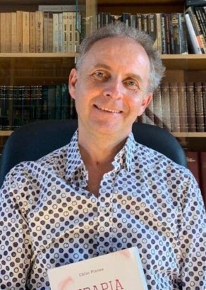
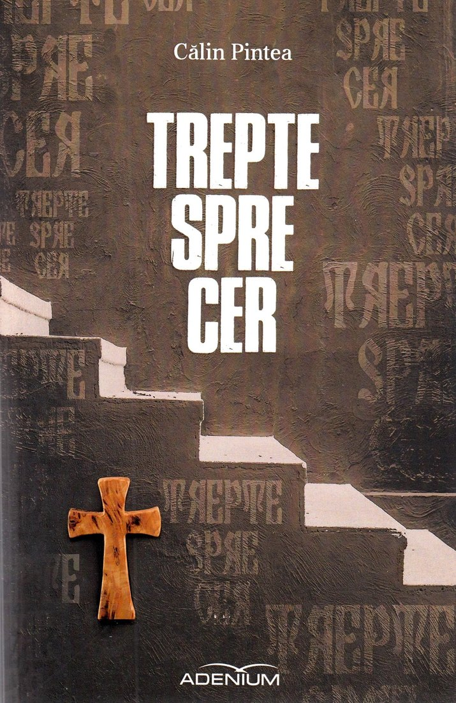
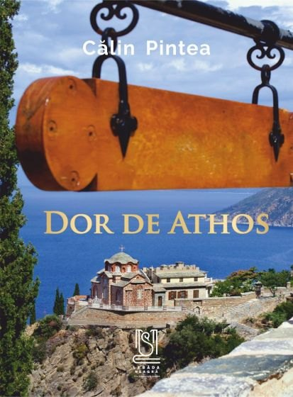
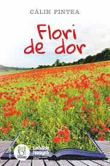
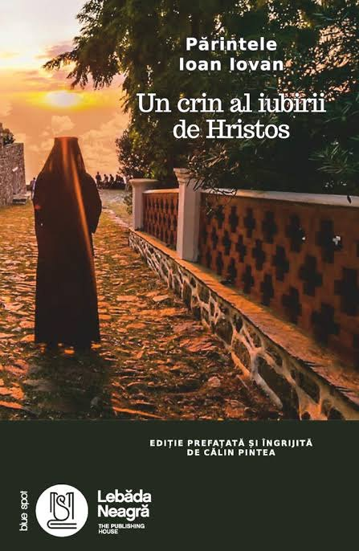
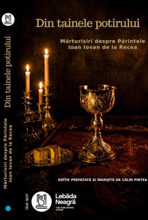
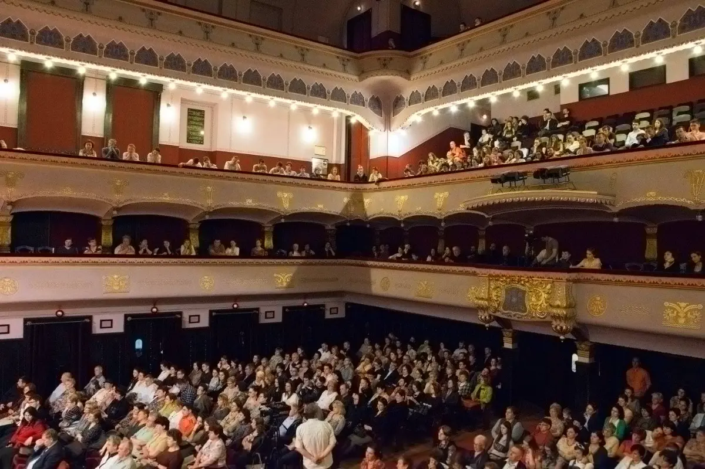
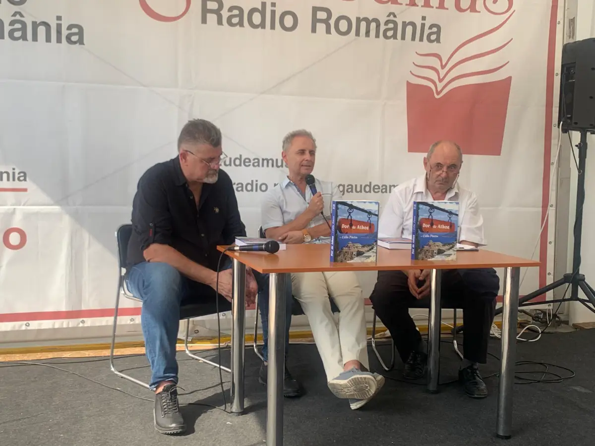
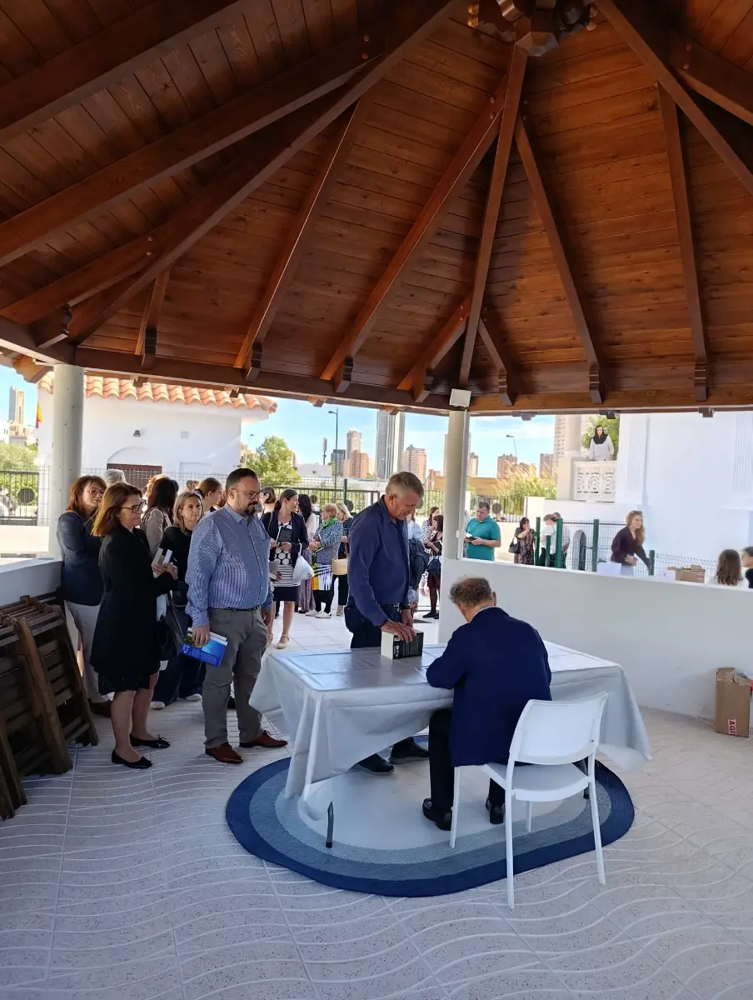

Trepte spre cer
Romanul de debut, în 813 pagini, la Editura Adenium: un intelectual își caută libertatea și pe sine în România „socialistă”.
Comandă carteaCălin Pintea, scriitor. Organizează lansări de carte, simpozioane și conferințe duhovnicești, în țară și în parohiile românești din diaspora.

Se comandă direct de la Editura Lebăda Neagră.





Romanul de debut, în 813 pagini, la Editura Adenium: un intelectual își caută libertatea și pe sine în România „socialistă”.
Comandă carteaDespre Sfântul Munte, după peste douăzeci de ani de pelerinaje. [O frază de la autor.]
Comandă carteaÎn ediții bilingve: engleză, franceză, germană, spaniolă, italiană și maghiară.
Comandă cartea[O frază despre carte, de la autor.]
Comandă carteaEdiții prefațate și îngrijite de Călin Pintea
Părintele Ioan Iovan. Lansată la Târgu Mureș, la Mănăstirea Hristos Pantocrator, la Benidorm și la Dublin.
Comandă carteaMărturisiri despre Părintele Ioan Iovan de la Recea.
Comandă cartea„Pagini de poezie în proză de o frumusețe tulburătoare.”
Lansări de carte, pentru cărțile lui și ale altor autori, simpozioane și conferințe duhovnicești: la Gaudeamus și Bookfest, în mănăstiri, la Târgu Mureș, la Benidorm, la Dublin și la Paris.



„Dor de Athos”Gaudeamus, Sibiu
„Terapia prin cultură”Bookfest, București
„Un crin al iubirii de Hristos”Târgu Mureș, Mănăstirea Hristos Pantocrator, parohiile din Benidorm și Dublin
„Trepte spre cer”Mănăstirea Acoperământul Maicii Domnului
„Lacrimile lui Moș Crăciun”lansare și premiera piesei de teatru
Simpozionul Sfântul Dionisie de la Colciu
„Din tainele potirului”mărturisiri despre Părintele Ioan Iovan de la Recea
Conferințe duhovniceșticu Părinții Constantin Necula, Valerian Pâslaru și Ghelasie Țepeș
„Dialoguri de taină”cu Părintele Maxim de pe Sfântul Munte Athos, Studio HUB
Confesiuni, la vernisajul Dacianei PszotaParis
Pentru o lansare de carte, un simpozion, o conferință sau un interviu, scrieți-i la
[adresa de email]Telefon: [număr] Facebook: [link] Cărțile: Editura Lebăda Neagră